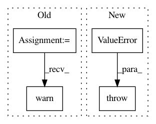

5f287d9215a8a62c93abb87f578ab9bdc6c63b0e,chainercv/utils/image/read_image.py,,read_image,#Any#Any#Any#Any#,91
Before Change
if _cv2_available:
return _read_image_cv2(file, dtype, color, alpha)
else:
warnings.warn(
"Although `chainer.config.cv_read_image_backend == "cv2"`, "
"cv2 is not found. As a fallback option, read_image uses "
"PIL. Either install cv2 or set "
"`chainer.global_config.cv_read_image_backend = "PIL"` "
"to suppress this warning.")
return _read_image_pil(file, dtype, color, alpha)
elif chainer.config.cv_read_image_backend == "PIL":
return _read_image_pil(file, dtype, color, alpha)
else:
After Change
return _read_image_pil(file, dtype, color, alpha)
elif chainer.config.cv_read_image_backend == "cv2":
if not _cv2_available:
raise ValueError("cv2 is not installed even though "
"chainer.config.cv_read_image_backend == \"cv2\"")
return _read_image_cv2(file, dtype, color, alpha)
elif chainer.config.cv_read_image_backend == "PIL":
return _read_image_pil(file, dtype, color, alpha)
else:
In pattern: SUPERPATTERN
Frequency: 3
Non-data size: 4
Instances
Project Name: chainer/chainercv
Commit Name: 5f287d9215a8a62c93abb87f578ab9bdc6c63b0e
Time: 2019-04-19
Author: yuyuniitani@gmail.com
File Name: chainercv/utils/image/read_image.py
Class Name:
Method Name: read_image
Project Name: chainer/chainercv
Commit Name: 5f287d9215a8a62c93abb87f578ab9bdc6c63b0e
Time: 2019-04-19
Author: yuyuniitani@gmail.com
File Name: chainercv/transforms/image/rotate.py
Class Name:
Method Name: rotate
Project Name: wkentaro/labelme
Commit Name: 8c259ee32983ee1eab4a37603a1db1fd01609824
Time: 2019-04-26
Author: www.kentaro.wada@gmail.com
File Name: labelme/utils/_io.py
Class Name:
Method Name: lblsave